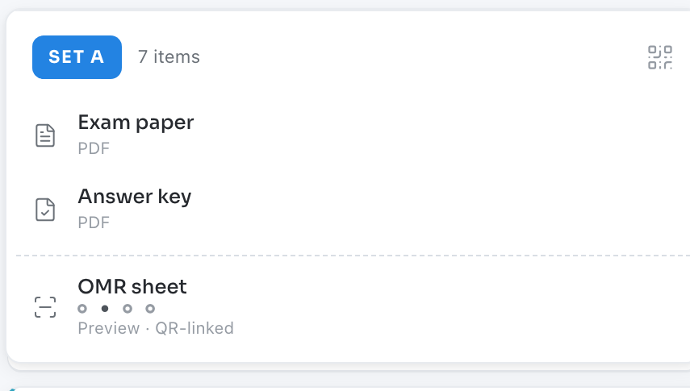
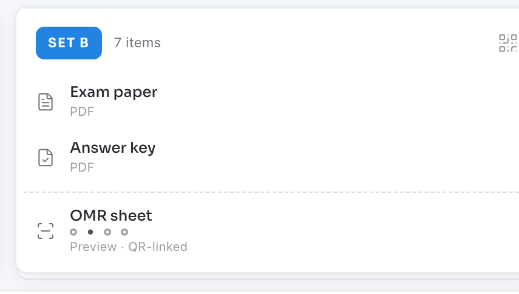

The exam
Two forms. One blueprint.
Set A and Set B assemble to the same matrix — exam paper, answer key and a QR-linked answer sheet for each.
Syllabus to blueprint. Blueprint to paired exam. Answer sheets to results.
The blueprint
Hours become items. Bloom weights become a matrix. Twenty topics find their cells.
Every occupied cell is an item the exam must place — no overruns, no gaps.
Specification matrix
| Topic | R15% | U20% | Ap20% | An20% | E15% | C10% |
|---|
The exam
Set A and Set B assemble to the same matrix — exam paper, answer key and a QR-linked answer sheet for each.


Regenerate the pair any time.
The matrix stays the law.
The readout
Scans arrive from the phone app. Flagged sheets surface first; mastery lands per topic and per Bloom level.

Questions grounded in your own materials, never the open web.